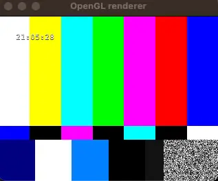

造轮子的快乐 - gst-pipeline-verifier
Posted on Sun 25 February 2024 in Journal
| Abstract | gst-pipeline-verifier |
|---|---|
| Authors | Walter Fan |
| Category | learning note |
| Status | v1.0 |
| Updated | 2024-02-25 |
| License | CC-BY-NC-ND 4.0 |
GStreamer 是一个强大的多媒体处理框架，比 FFmpeg 更具扩展性，它巧妙地应用了管道模式，将一个个元件串联起来，可以从容应对各种场景。
以最简单的 videotestsrc -> autovideosink 为例, 将一个测试视频显示出来, 可以使用 gst-launch-1.0 这个命令行工具以如下命令执行
gst-launch-1.0 -ev videotestsrc ! autovideosink
我们可以通过添加一个 clockoverlay 元件很容易地添加一个时间显示
gst-launch-1.0 -ev videotestsrc ! clockoverlay ! autovideosink

我们还可以通过 capsfilter 来调整视频的分辨率和帧率:
gst-launch-1.0 -evcm videotestsrc num-buffers=100 \
! capsfilter caps='video/x-raw,width=1920, height=1080, framerate=30/1'
! clockoverlay ! autovideosink
还有很多不同的用法, 千变万化, 例如把旧电脑上的视频以 RTMP 推送到 SRS 服务器上, 也就两个步骤
1) 启动 SRS server
export CANDIDATE="192.168.0.106"
sudo docker run --rm --env CANDIDATE=$CANDIDATE \
-p 1935:1935 -p 8080:8080 -p 1985:1985 -p 1995:8000/udp \
registry.cn-hangzhou.aliyuncs.com/ossrs/srs:5 \
objs/srs -c conf/rtmp2rtc.conf
2) 推送 mp4 视频流
gst-launch-1.0 -ev filesrc location=material/talk.mp4 \
! decodebin \
! videoconvert \
! identity drop-allocation=1 \
! openh264enc bitrate=4000000 \
! videoconvert \
! flvmux streamable=true \
! rtmpsink location='rtmp://192.168.0.106:1935/live/talktest'
GStreamer 的 gst-launch 工具非常好用, 强大而灵活
参见 https://gstreamer.freedesktop.org/documentation/tools/gst-launch.html?gi-language=c
有一点感觉不方便的是每次都要输入冗长的管道描述字符串, 哪怕你只是重复上次做的一件小事.
我在过年期间就写了这样的小工具, 其实也就是把构建 GStreamer Pipeline 的步骤用 C++ 代码逐步实现, 大致步骤如下:
@startuml
start
: g_main_loop_new;
: gst_pipeline_new;
: create_elements;
: add_elements_into_pipeline;
: link_elements;
: gst_element_set_state;
: g_main_loop_run;
if (msg type == GST_MESSAGE_EOS) then
: unlink_elements;
: remove_elements;
: release_elements;
endif
end
@enduml
用法
./bin/gst-pipeline-verifier -p <pipeline_name> [-f <config_file>] [-v] [-l]
-p <pipeline_name> : specify pipeline name that want to verify the detailed pipeline configuration refers to config_file
-f <config_file> : specify configuration file, it is ./etc/config.yaml by default
-l : list the pipelines in configuration file
-v : print current version
示例
# list all pre-defined pipeline
./bin/gst-pipeline-verify -l
# execute specified pipeline
./bin/gst-pipeline-verify -p pipeline_test
# play a mp4 file by pipeline mp4_play
./bin/gst-pipeline-verify -p mp4_play
# check the mp4 playback pipeline as gst-launch format
./bin/gst-pipeline-verify -p mp4_play
# run pipeline 'wav_scope_test' within aonther config file
./bin/gst-pipeline-verify -f ./etc/audio.yaml -p wav_scope_test
具体代码参见 gst-pipeline-verifier
本作品采用知识共享署名-非商业性使用-禁止演绎 4.0 国际许可协议进行许可。